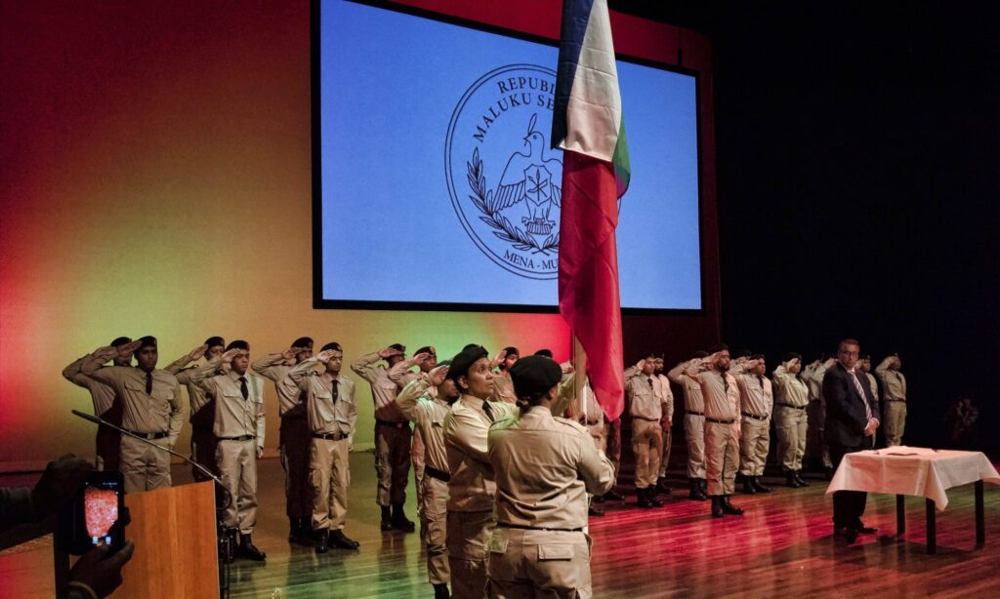

Onafhankelijkeheid
De onafhankelijkheid van de Republiek der Zuid-Molukken (Republik Maluku Selatan, RMS) is een historisch belangrijke gebeurtenis die plaatsvond in de nasleep van de Indonesische onafhankelijkheidsstrijd tegen Nederland en de totstandkoming van de onafhankelijke staat Indonesië in 1949.
Voorgeschiedenis
De RMS is geproclameerd tijdens het dekolonisatieproces van Indonesië. Dat proces was in de Tweede Wereldoorlog aangewakkerd door de Japanners, met wie de eerste RI-President Soekarno al samenwerkte, en na de oorlog door onder anderen de VS. In de oorlog werden door Japan behalve de Nederlanders ook de Molukkers als vijand behandeld. Daardoor groeiden bij velen onder de Molukkers en de Nederlanders emotionele banden. Veel Nederlanders hadden in de oorlog hun leven aan de Molukkers te danken. De Indonesische vrijheidsstrijd was behalve tegen de Nederlanders ook gericht tegen de met de Nederlanders samenwerkende Molukkers. Hoewel de kijk op de (eigen) geschiedenis zich van tijd tot tijd ontwikkelt, geldt als uitgangspunt dat deze Molukkers destijds niet het gevoel hadden dat zij een bevrijdingsstrijd tegenwerkten, maar meenden te helpen om orde en rust te bewaren en te herstellen. Anarchisme en gewelddadigheid drukten in die tijd al een stempel op het Indonesische nationalisme, een traditie die tot op de huidige dag wordt voortgezet in praktijken van corruptie (politieke elite) en staatsterreur (leger en politie).
De RMS proclamatie
Op 25 april 1950 werd de Republiek der Zuid-Molukken uitgeroepen door onder andere, Dr. Chris Soumokil en J.H. Manuhutu. De proclamatie was gebaseerd op het verlangen naar een onafhankelijke staat voor de Molukken, los van de pas opgerichte Indonesische Republiek. J.H. Manuhutu werd de eerste RMS-President. Op 2 mei 1950 werd de RMS-vlag gepresenteerd en op 25 mei 1950, een maand na de proclamatie, werd de Grondwet van de RMS van kracht. Dr. Chris Soumokil, werd minister van buitenlandse zaken.
Onderdrukking van de RMS
De onafhankelijkheidsverklaring van de RMS leidde tot spanningen met de Indonesische regering onder president Soekarno. De Indonesische regering beschouwde de Molukken als een integraal onderdeel van de nieuwe natie en streefde naar het herstel van gezag over de regio.
Het Indonesische leger begon militaire operaties in de Molukken om de onafhankelijkheidsbeweging te onderdrukken. Deze operaties resulteerden uiteindelijk in de inname van Ambon door het Indonesische leger en de arrestatie van Dr. Soumokil in 1950.
RMS in ballingschap
Hoewel de RMS niet succesvol was in het handhaven van onafhankelijkheid, bleef de zaak van de Molukse onafhankelijkheid in ballingschap voortleven. Sommige Molukse gemeenschappen in Nederland en elders bleven de zaak van de RMS steunen en pleiten voor erkenning.